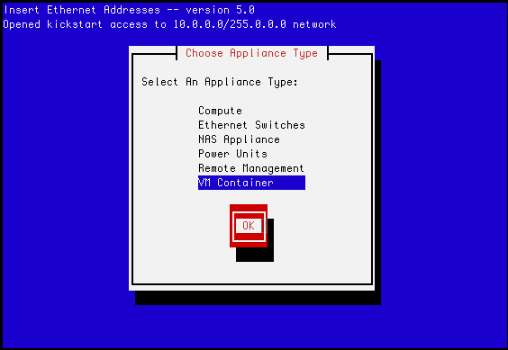

Xen Roll: Users Guide: 
| ||
|---|---|---|
| Prev | Chapter 3. Using the Xen Roll | Next |
First, you will need to install a physical machine that will act as the "container" for your VMs. This method is very similar to the method for installing compute nodes.
On the frontend, execute:
# insert-ethers |
You will see a screen that looks like:

Select the 'VM Container' appliance, then hit 'OK'.
Now PXE boot the physical machine that will be your VM container. Just like a compute node, the VM container will be recognized by insert-ethers and installed. The default name of the node will be vm-container-X-Y.
You can install as many VM containers as you like.